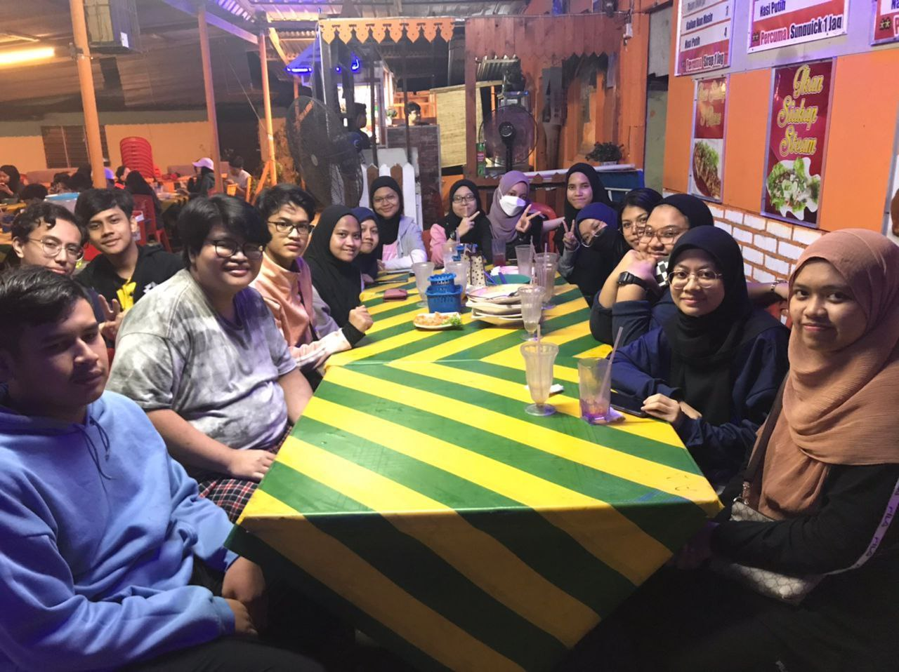
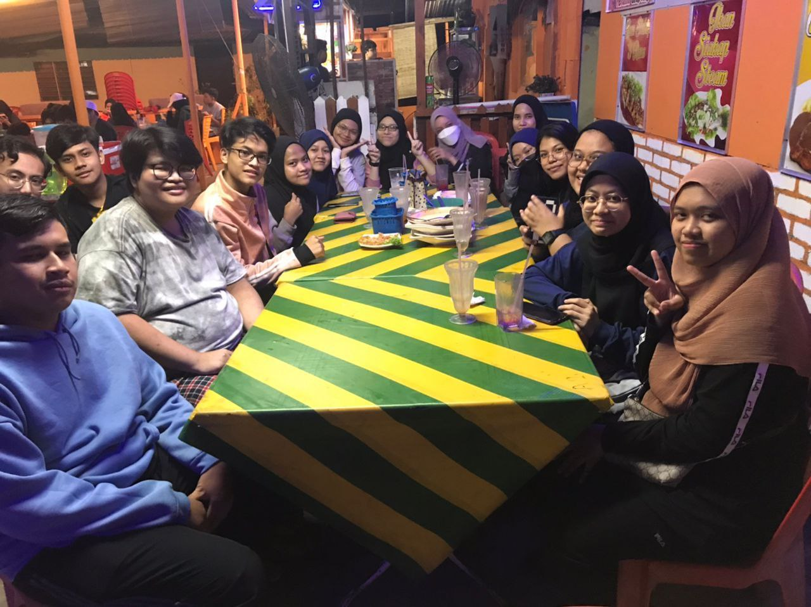
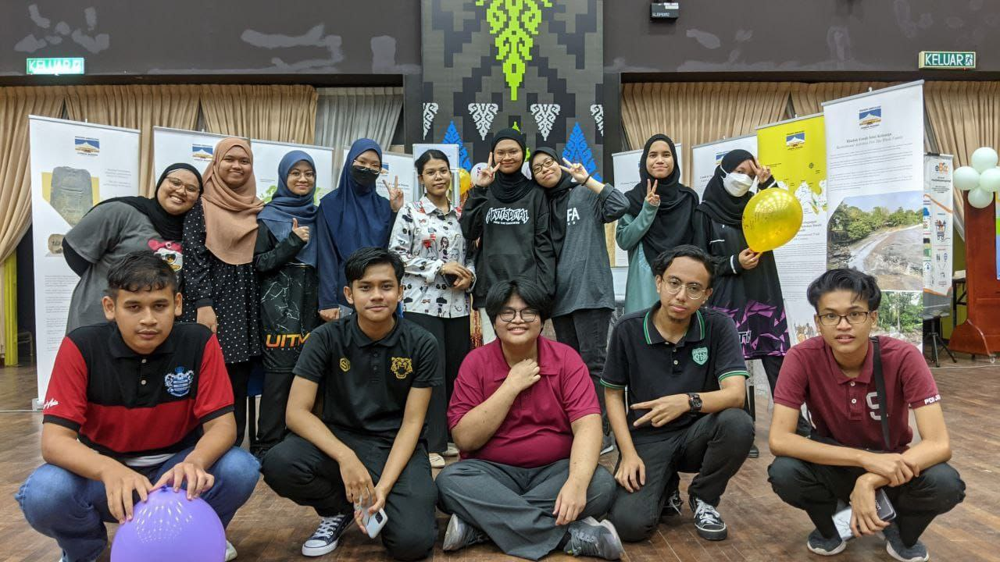
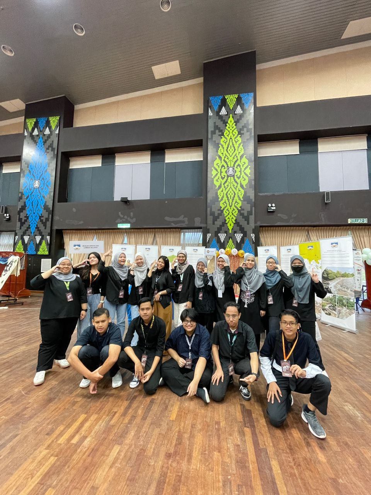
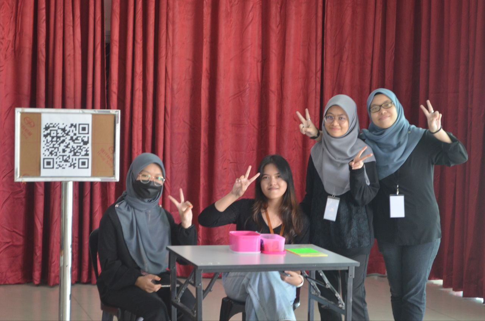
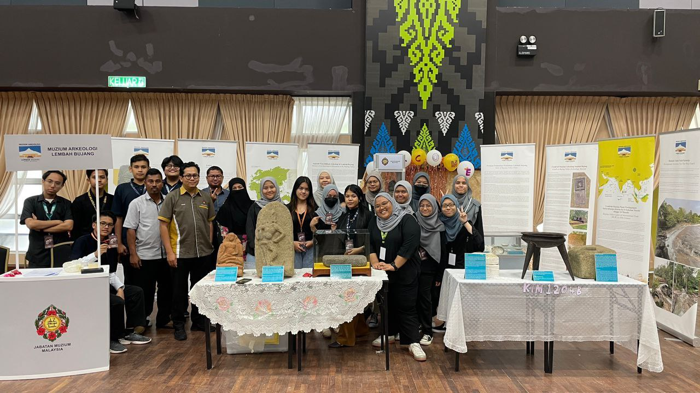
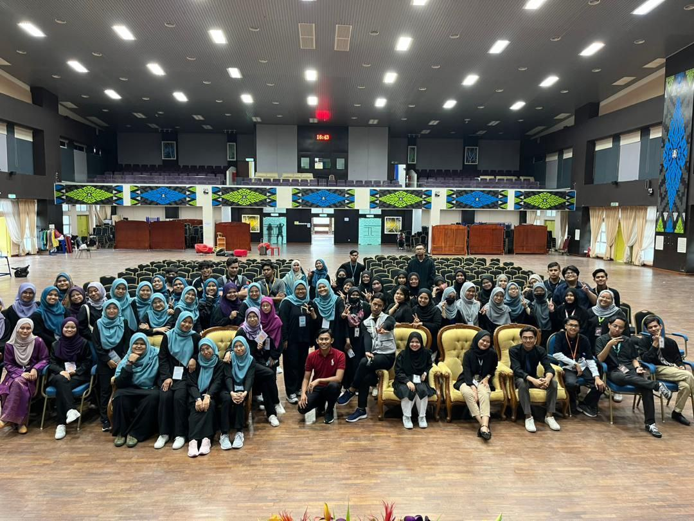

The most highlighted event in my final semester. This video are the compilation that filled with memories of the event.

Before we conducted an event related to our course, we did a meetup at restaurant nearby. It was a great experience as my girl classmates and I walked together at rainy night just to do a simple meeting with our entire classmates. Throughout the meeting, we were able to communicate to each other and it was nice because everyone accepted each other's opinion just to ensure the upcoming event will be successful.

A day before the event, we did a final preparation until late night. It was tiring but we had so much fun. In the evening, my friends and I sent an invitation card to lecturers. Then, few preparation that we did was related to decoration such as making an origami, blow the balloons, patched the wallpaper, and many more. We are not hoping too much, but we truly wish the event gonna be successful.

The day of the event, we were quite worried as the replica from Muzeum Lembah Bujang did not able to came on time. However, we handled the issues patiently. When the event has started, it was unexpectedly too many students came.Throughout the event, we did take a break and listened to talk from invited doctor regarding mental health. Then, we also listened to the next slot which was from Agensi Anti-dadah Kebangsaan.

I was in charge of giving coupons to students who came to the event together with few of my classmates. As an extrovert, it was no problem for me to became approachable. I handled the coupons session from 11 a.m. until 2 p.m. After that, I continued my next duty at our booth by providing quizzes to students.

Then, around 5 p.m., we started packing those things at the booth as our event has came to the end. After that, we gathered to take pictures with Muzeum Arkeologi Lembah Bujang's team and with entire students of Information Management for memory purpose.


 s
s